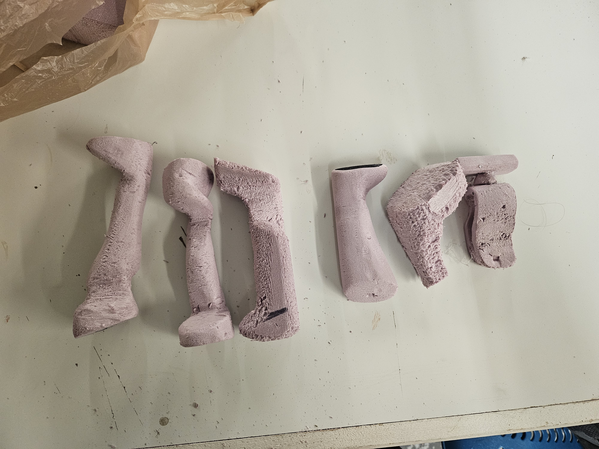
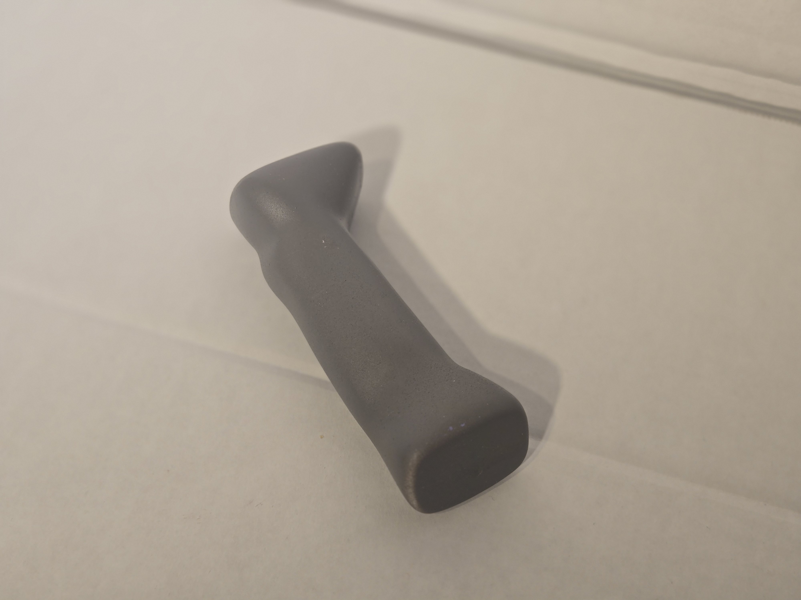
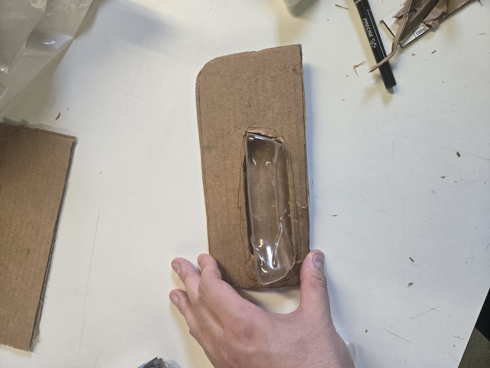
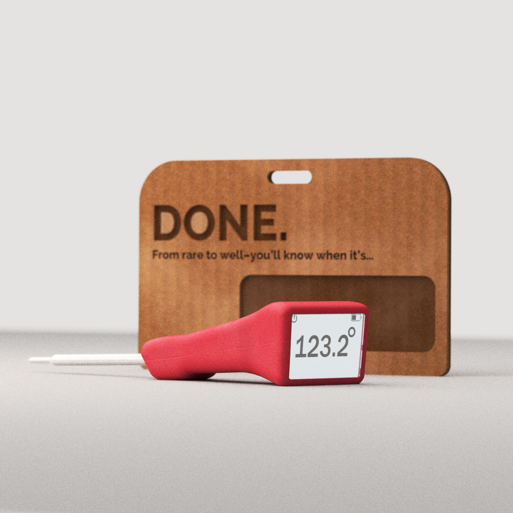
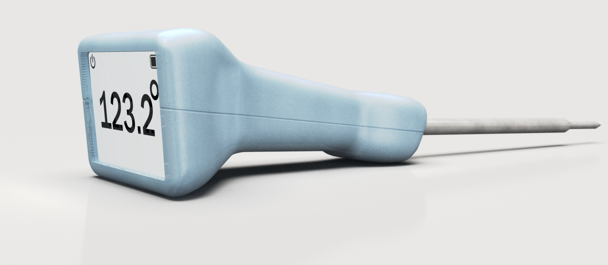

From rare to well — you'll know when it's done.
The Problem
Meat thermometers are utility objects masquerading as tools. Most are clinical, forgettable, and designed to disappear into a drawer. But the moment of using one — standing at the grill, checking the roast — is a moment of anticipation. The product should match the energy of that moment.
The insight was direct: if the product's only job is to tell you one thing, it should say that thing loudly. The name writes the brief. DONE.
Competitive Scan
A scan of the category confirmed it: Thermapen, ThermoPro, MEATER, OXO. All of them functional. None of them speak to what it actually feels like to cook. Every product in this space has been designed around precision and clinical legibility — which is correct, but incomplete. The category has never matched the energy of the context it lives in.

The product in context — designed to live on the counter, not hide in a drawer
DONE. A cooking pun and a product promise. From rare to well — you'll know when it's done.
Design Criteria
The research pointed to one insight: this product has one job — tell you the temperature. The brief became about doing that job loudly, with a product that actually belongs in the context it's used in. Five criteria shaped everything that followed.
The product's one job is to display temperature
Large, face-forward display — readable from across the grill
Used while gripping or set flat on a surface
Ergonomic handle that works in both positions
The product should feel like it belongs in a considered kitchen
Minimum four colorways — not just the standard black and white
Category packaging is universally clinical and disposable
Premium hang card — packaging that earns shelf space
Every element of the product should reinforce one message
Singular branding promise: DONE.
Concept Exploration
I explored a wide range of handle concepts through sketching — clip-on forms, probe-forward layouts, pistol-grip ergonomics, rotating display heads. The sketch spread moved quickly from utility shapes toward something more considered: an ergonomic handle with a distinctly large, face-forward display and a gentle angled geometry that reads the temperature clearly whether the thermometer is upright or flat on a surface.
Four directions were developed far enough to evaluate. The angled fixed-face handle was selected — it solved the dual-position legibility problem without the mechanical complexity of a rotating head, and its geometry made the display the undeniable primary feature of the product.

Concept exploration — clip-on · pistol-grip · rotating head · angled fixed-face selected

Concept foam cuts — four directions before selecting the angled fixed-face handle
Foam Modeling
Before committing to SolidWorks, I built multiple foam handle models to test shape, feel, and ergonomics in hand. This stage was critical — the final handle geometry came directly from foam, not from a screen. The ergonomic waist, the angular transition to the display head, the balance point — all resolved in foam first.
The foam models answered questions a screen can't: how does it feel at the grill? Does the display read naturally from above? Is the probe angle comfortable when set flat on a counter? The shape looks simple now because it was simplified through carving and sanding until it was right — then translated back into geometry.

Final foam model — front view, angled display head clearly resolved

Side profile — the ergonomic waist and head angle that translated directly to CAD
The final handle geometry came directly from foam, not from a screen.
Injection Molding
With the geometry resolved in foam, the handle was prototyped as an injection-molded part — a final check on proportion, ergonomics, and the relationship between handle and hang card at production scale. The molded handles confirmed the form held up and validated the colorway range.

Injection-molded prototype — form check at production scale

Prototype + packaging — handle mounted in the hang card window
The Product
DONE. is a digital probe thermometer with a large, square face display, ergonomic handle in five colorways, and a kraft hang-card package. The display shows temperature at a glance; the handle fits naturally in hand whether gripping it at the grill or setting it flat on a counter.


Colorways
Red · Pink · Taupe/Grey · Teal · Mint. Five colorways from the same base geometry — designed to live on a counter, not hide in a drawer. The colorways aren't cosmetic. They're the product saying it belongs somewhere considered.

Mint · Pink · Taupe/Grey — three of five colorways
Exploded View
Body shell · PCB + screen · Display lens · Steel probe. Four components. The exploded view makes the product's simplicity legible — there's nothing here that doesn't have a reason to be there.

Exploded — body shell · PCB + screen · display lens · steel probe
Packaging
Packaging was prototyped in parallel using kraft cardboard hang cards. Multiple iterations tested the window cutout size and shape, the hang hole proportion, and the "DONE." branding placement. The final packaging render uses a warm kraft card with laser-etched typography — premium but approachable. The same legibility logic that drives the product's display face runs through the package: the name is the largest thing on it.

Kraft hang card — laser-etched typography, window cutout showing the product

Early packaging prototype — cardboard + thermoformed plastic window, testing window size and proportion

Seven iterations — refining window cutout size, hang hole proportion, and branding placement

Final packaging render
